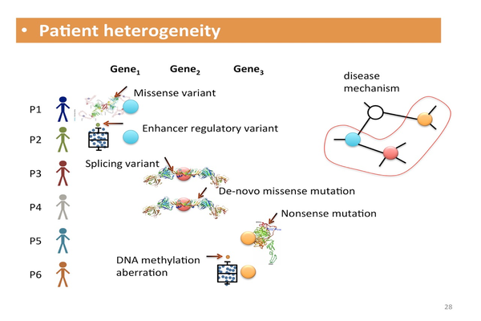

Identifying genes associated with complex human diseases is one of the main challenges of human genetics and computational medicine. To increase the power of identifying genes associated with diseases and to account for other potential sources of protein function aberrations, we proposed a novel factor-graph based model, where much of the biological knowledge is incorporated through factors and priors. Our extensive simulations show that our method has superior sensitivity and precision compared to variant aggregating and differential expression methods.
link to paper